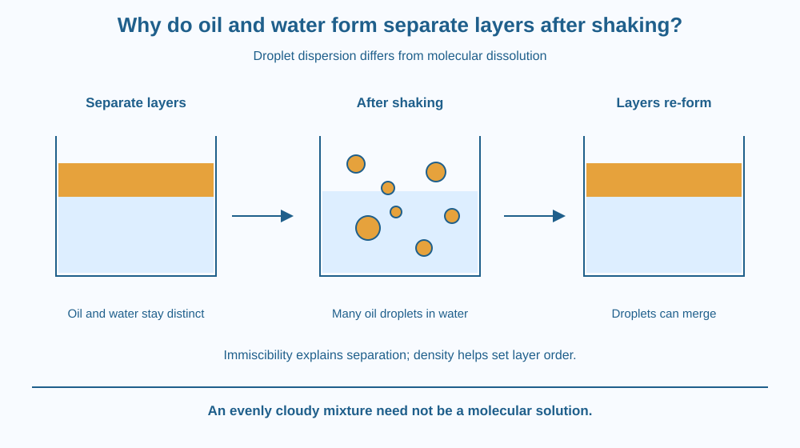

Explain why an oil-and-water mixture separates after shaking. Distinguish immiscibility, droplets and density-based layer order. Predict how changing shaking intensity affects the temporary appearance without assuming that it changes the liquids' long-term tendency to separate.
A little cooking oil rests above water in a closed transparent container. Shake the container gently, and the sharp boundary disappears into many tiny droplets. Leave it still, and the two main layers return.
Did shaking make the liquids dissolve and then somehow undo the process? Not necessarily. A liquid can be broken into small suspended droplets without becoming mixed at the molecular scale. The difference between those two arrangements explains why an apparently uniform cloudy mixture may later separate.
Two liquids are miscible if they can form a uniform liquid mixture over the relevant range of proportions. Oil and water are largely immiscible under ordinary kitchen conditions: they tend to form separate liquid regions rather than one homogeneous solution.
Water molecules interact strongly with one another. Typical cooking-oil molecules have large nonpolar regions that do not interact with water in the same way. Mixing them does not provide a favourable set of interactions sufficient to keep them uniformly combined at the molecular scale.
It is misleading to picture oil and water as two materials that actively push each other away like identical magnetic poles. The outcome depends on the relative interactions among water molecules, among oil molecules, and between the two. The system tends toward arrangements that reduce unfavourable interfacial contact.
Shaking supplies mechanical energy that breaks larger oil regions into droplets distributed through water. Each droplet is still a region of oil. It is much larger than an individual molecule, even when it is too small to distinguish easily with the naked eye.
A temporary dispersion of one liquid as droplets in another can be called an emulsion. Without a stabilising arrangement, droplets can encounter one another and merge, a process called coalescence. Smaller droplets joining larger ones gradually recreate more distinct liquid regions.
Many ordinary cooking oils are less dense than water, so they form the upper layer. This density difference helps explain the layer order, not the basic reason the liquids remain separate. Two immiscible liquids could have a different order if their relative densities were different.
Shaking more vigorously can initially produce smaller droplets and a cloudier appearance. It does not necessarily make the liquids permanently miscible. The time taken to separate depends on droplet size, liquid properties and conditions. There is no single universal waiting time for every kitchen mixture.
Ordinary food mixtures can contain substances that stabilise droplets, so a real dressing may behave differently from just oil and water. This lesson deliberately excludes detergent and the micelle mechanism of soap, which were covered earlier. The focus is the difference between temporary droplet dispersion and molecular mixing.
Draw water as a continuous blue region and oil as one amber layer. In a second picture, divide the amber layer into many separate circles surrounded by blue. Keep each circle amber inside.
The second drawing represents droplets, not dissolved oil molecules. In a third picture, merge neighbouring circles and restore a larger oil region. This sequence makes it possible to explain shaking without claiming a chemical transformation.
Now place a small label beside the final upper layer saying “less dense in this example.” Keep another label beside the boundary saying “largely immiscible.” These labels answer different questions: which layer is on top, and why separate liquid regions remain.
The SVG has three containers: separate layers, shaken droplets and layers re-forming. Oil is amber and water blue throughout the sequence, so the identities remain trackable.
The middle container contains small amber circles, each explicitly labelled as a droplet rather than a molecule. Two arrows point toward merging droplets in the final stage. A caption separates immiscibility from the density explanation for oil being above water.
The diagram exaggerates droplet sizes for visibility. It is not a claim that every shaken mixture has the same sizes or separates along exactly the same timetable.

A simple oil-and-water dressing may need shaking before use because the ingredients tend to separate. Shaking changes the distribution temporarily. It does not necessarily change the fundamental compatibility of the liquid molecules.
Cooking oil can also form a surface layer on a watery food. That visible arrangement involves both separation and density. However, a complex food contains many ingredients, so it should not automatically be treated as the same simple two-liquid system.
Do not pour the experiment into a drain. A small amount of used oil can be wiped into suitable household waste with adult help. The lesson concerns liquid separation, not a demonstration that oil-contaminated water is safe after the visible layer is removed.
Use a small transparent container with a secure lid, room-temperature water and a small amount of cooking oil. Do this with an adult. Use an unbreakable container and keep it well away from electrical equipment.
Do not taste the sample or claim a permanent result from a brief observation. Separation may continue beyond five minutes. Do not add detergent; it would introduce a different mechanism and change the question being investigated.
If two liquids have different densities but are fully miscible, must they remain as two permanent layers after mixing? Explain why density difference alone is not a complete rule for deciding whether liquids mix.
Now suppose vigorous shaking makes smaller droplets than gentle inversion. Predict how the appearance might change while keeping the explanation separate from a claim about complete molecular dissolution.
What is an oil droplet in shaken water?
Answer: B — A droplet remains oil even though it is dispersed within water.
Why does ordinary cooking oil usually form the upper layer?
Answer: A — Relative density helps determine the order of separate liquid layers.
A shaken mixture looks evenly cloudy. What can you conclude?
Answer: C — A dispersion of many small droplets can look uniform without being a molecular solution.
Create a correction to the statement “Shaking makes oil dissolve in water.” Use three pictures to distinguish layers, droplets and a uniform molecular solution.
Your correction should also explain why oil is usually the upper layer in this kitchen example. Keep the explanation about density separate from the explanation about immiscibility. Include a reminder that the drawings are enlarged models rather than visible molecular photographs.
A mixture can look evenly cloudy while still containing countless separate regions of another liquid. Visual uniformity is not always molecular uniformity. Following whether the material forms droplets or a true solution is more informative than deciding whether the boundary is easy to see at one moment.
Shaking disperses oil into droplets; immiscibility favours separation, while the liquids' relative densities help determine which layer lies above the other.